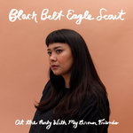

Quick Takes (September 2019)
Hi everyone, and welcome to our latest installment of Quick Takes!
Contrary to my less-than-favorable takes in August, the month of September brought a slew of excellent releases that I wish I would've had the time to dive deeper into. Especially Danny Brown and Joan Shelley, two artists who, though different, explore new, unexplored facets as they're more established in their respective careers. This time, though, it was staff writer Ethan Gordon who had the great displeasure of covering two of last month's most underwhelming albums, from M83's uneventful return to Fitz and the Tantrums' dull indie-pop. Writer Jeremy Gordon contributes one this month, too, and it's a great one—Black Belt Eagle Scout's second album, which is easily my favorite out of these seven picks.
What were your favorite albums during the month of September? Anything we didn't get to review that we should've? You can always reach us on Facebook, or on our official twitter page. - Juan
..
Black Belt Eagle Scout
At the Party With My Brown Friends
(Saddle Creek)
Intimacy is an important element of Katherine Paul’s music. Her debut album, Mother of my Children, mostly consisted of her voice accompanied by a guitar with occasional full-band arrangements that sent little ripples through the otherwise hushed spaces. Both fiercely personal and political, it was written during the breakup of a queer romance and when her loved ones were protesting at Standing Rock. At the Party With My Brown Friends, her second album as Black Belt Eagle Scout, is no less intimate: her songs continue examining love, friendship, personal growth, identity, and also giving both a space and a voice to indigenous queer people. What's remarkable about it is how the music manages to feel more subdued and lusher at the same time: the arrangements ping pong between hushed restraint and sweeping volume, strings and keyboards makes appearances, drums snap crisply, guitars ring brightly, and her breathy voice has an even greater presence with her powerful falsetto capable of leaving you tingling. The feeling of luxuriating in an intimate space still remains, and, in place of the scrappiness of her debut, she's creating some truly rich and bold music that makes no less of an impact. It's one of those rare, almost perfect follow-up, albums from a promising artist unafraid of taking her music to even more thrilling places without sacrificing what made it so compelling to begin with. [8/10] Jeremy Monroe
Fitz and the Tantrums
All the Feels
(Elektra/NEK)
It’s easy to have a love-hate relationship with Fitz and the Tantrums—even when they used to be good. Breaking into the indie scene with a solid debut album in 2010, there was always something about the group that seemed a little too polished, a little too ready for the limelight. They almost broke through with a series of singles that got a lot of radio play (The Walker, Out of My League, Handclap), ranging in quality from mediocre to bad; and to top it all off, they released one of the worst albums of 2016, entitled Fitz and the Tantrums. Even if Pickin’ up the Pieces, that 2010 debut, was remarkably well written and catchy, it’s hard to be excited for a new Tantrums album in 2019. And yet here we are, with a new Fitz and the Tantrums album they called All the Feels. While it’s not as offensive as that 2016 self-titled album, the production is more bland, rubbery, and unaffecting than ever. Somehow it’s an improvement, being endlessly forgettable and mediocre opposed to the offensiveness of a track like 2016’s Complicated—even if the acoustic guitars and pitch-shifted melody on I Just Wanna Shine” get close to a previous level of badness. All the Feels feels like it could be fine if it lost 5 or so songs, but at 17 songs, bloated is an understatement. The writing here is as nondescript as ever, with each song title feeling like a different platitude. It was a nice fantasy that Fitz and the Tantrums would be a great soul group, but after 3 albums of flaccid synthpop, we should've known better. [4/10] Ethan Gordon
M83
DSVII
(Mute)
With M83, there’s always been something cinematic about their music. From the soaring synthpop of Midnight City or Go!, to scoring for films like Knife + Heart or Oblivion, it makes sense that you can almost see the music as it’s being played. Case in point: DSVII is the followup to 2007’s Digital Shades Vol. 1, and it’s also M83’s first ambient project since. From the first track alone you can hear shades of classic Giallo scoring, as Hell Riders could easily soundtrack the original Suspiria. It’s also equally uncinematic in a simple way: it lacks any form of tension or draw. It’s a toothless project, but it’s also an interesting one in theory. This should be a return to his electronica roots, an ode to the classic pioneers of analog synth, and a reset from the underwhelming Junk. The problem is that DSVII doesn’t capitalize on this; it’s an album without the excitement of the first Digital Shades without the correct tones and instruments to recall those pioneers, and in terms of quality, Junk is still a little better. There’s one moment where this album succeeds, and it’s the stripped-down piano piece of Jeux d'enfants, which is brief and striking—two rare qualities on this album. [5/10] Ethan Gordon
Bat for Lashes
Lost Girls
(AWAL Recordings)
There's no concept that Natasha Khan is unable to tackle. And in Lost Girls, her fifth album with Bat for Lashes, she creates a female heroine ("Nikki Pink") who undergoes a search for her identity over synth-driven songs fit for '80's sci-fi and fantasy films—it makes even more sense knowing that the London multi-instrumentalist moved to Los Angeles to focus on screenwriting and scoring films. Khan remains faithful to her sources of inspiration, from Tim Capello's sax work in the Lost Boys score (Vampires) to the chintzy, atmospheric soundscapes of John Carpenter (Jasmine). It doesn't stray too far from the gothic overtones that always surround her work, though this time, they're textured with a new-wave flavor—the icy, romantic ballad Safe Tonight, for example, evokes the sultry, melodramatic bounce of Eurythmics. Even if Lost Girls often sounds like scrapped ideas taken from a larger project, Khan doesn't go too deep into nostalgia—still working firmly within a pop framework. [7/10] Juan Edgardo Rodríguez
 Danny Brown
Danny Brown
UknowwhatImsayin¿
(Warp)
After 2016's frantic, drug-addled Atrocity Exhibition, Danny Brown sought to forego his usual eccentricities—or at least disguise his impetuosity from the perspective of a traditionalist. UknowwhatImsayin¿ is the Detroit rapper's true MC album, one where he pares down the sinister experimentation of Atrocity and keeps the focus mostly on his inventive bars. Bringing A Tribe Called Quest veteran Q-Tip behind the boards may have something to do with this shift, rendering a clarity that makes his nasal flow pop—whether he's describing his lived experiences or spitting out well-calculated non-sequiturs. Relying less on atmosphere, tracks like Savage Nomad and Negro Spiritual reveal a rawness that balances his brisk delivery and minimal samples with renewed urgency. It comes with a caveat, though, as taking a more formalist direction puts the focus on technique rather than subject matter. And that's okay—Brown could use a breather, rightfully easing his grip on the beat as he announces his return without showboating (Change Up). Wiser, and even paternal to a degree, he begins his 40s with a clean slate—and still intent on leading the pack. [8/10] Juan Edgardo Rodríguez
 Joan Shelley
Joan Shelley
Like the River Loves the Sea
(No Quarter Records)
In a time of delicate and tenuous change, Joan Shelley traveled to Iceland to record her fifth solo album, Like the River Loves the Sea. This new setting may seem foreign to the Kentucky singer-songwriter, but there's something uncanny about how her hometown's scenic sights are akin to Iceland's beautiful glacial coastlines. In short, her creative retreat feels like an extension of her roving spirit. She adds a different color to Cycle and The Fading, both of which incorporate string arrangements serviced by Icelandic sisters Þórdís Gerður Jónsdóttir and Sigrún Kristbjörg Jónsdóttir over her earthy acoustic strums. Tracing the dwindling rhythm of a love that has lost its way, Shelley's open confessions feel honest and relatable—as if we're intruding on her aching meditations. You can hear how she gradually tempers her busy thoughts, setting her mind at ease with a sense of renewal. And in her clean, unembellished melodies, reminding us that we can take our true selves whichever way we choose to roam. [8/10]
 Surf Curse
Surf Curse
Heaven Surrounds You
(Danger Collective)
Somehow, Surf Curse frontman Nick Rattigan forgot to get the memo that nervy, college rock jangle has become passé. And thankfully so—Heaven Surrounds You, his third album with bandmate Jacob Rubeck, incorporates surf-riding guitars and swift, energetic rhythms over heart-pounding choruses like there's no tomorrow. Given Rattigan's drumming abilities, you can immediately hear how the fast, chugging guitars of Maps to the Stars and Dead Ringers are written around his frenetic beat. And yes, those song titles, alongside Midnight Cowboy and Hour of the Wolf, are all meaningless references to the auteur cinema Rattigan loves. But beneath the pretension (at least they've honored most of them with music videos that loosely match those film's visual style), he uses them as placeholders to mask his agonizing heartbreak. Heaven Surrounds You is rightfully messy, and Rattigan's lyrical sentiments often fall into cloying clichés, but it is also pure hook-filled fun—and possibly the album I've heard the most this year thanks to its tuneful instant gratification. [7/10]